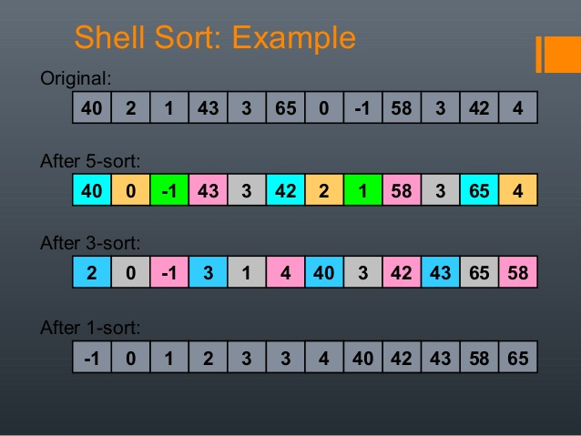
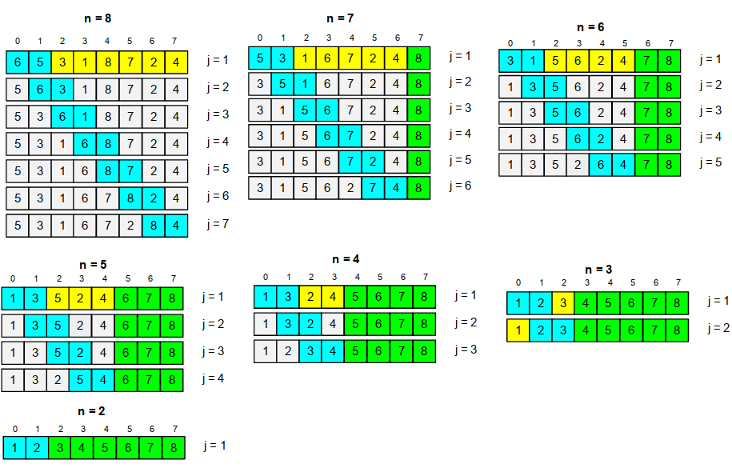

SORT 정렬
-
정렬은 크게 주기억장치에서 이루어지는 내부 정렬
(소량의 데이터에 대해 주기억장치에서 정렬하는 방식)과
보조기억장치에서 이루어지는 외부 정렬(대량의 데이터에 대하여 보조기억장치에
기억시켜서 정렬하는 방식)로 구분된다.
-
내부 정렬 : 선택법(히프 정렬)
삽입법(삽입 정렬, 쉘 정렬)
교환법(버블 정렬, 선택 정렬, 퀵 정렬)
병합법[합병법](2-Way Merge Sort)
분배법[분산법](기수 정렬{Radix Sort})
-
외부 정렬 : 공사중
삽입 정렬(Insertion Sort)
- 삽입 정렬은 가장 간단한 정렬 방식으로 이미 순서화된 파일에 새로운 하나의 레코드를 순
서에 맞게 삽입시켜 정렬한다.
- 정렬 방법 :

- 평균과 최악 모두 수행 시간 복잡도는 O(n제곱)
쉘 정렬(Shell Sort)
-
삽입 정렬의 확장 개념
-
일정한 거리의 기준을 두어 거리가 떨어진 원소끼리만 삽입 정렬을 하고
기준을 줄여가며 삽입 정렬을 수행한다.
-
정렬 방법 :

- 평균 시간 복잡도 : O(n^^1.5)
최악 시간 복잡도 : O(n^^2)
버블 정렬(Bubble Sort)
- 인접한 두 개의 키 값을 비교하여 크기에 따라 서로 위치 교환
- 정렬 방법 :

- 평균과 최악 모두 수행 시간 복잡도는 O(n^^2)
퀵 정렬(Quick Sort)
- 비교 정렬에 속한다.
- 분할 정복 방법 : 문제를 작은 2개의 문제로 분리하고 각각을 해결한 다음, 결과를
모아서 원래의 문재를 해결하는 전략이다.
- 분할Divide : pivot을 중심으로 자료를 나눔
- 정복Conquer : 부분집합의 원소들 중 pivot 보다 작은것 왼쪽 큰것 오른쪽 부분집합
으로 정렬한다.
- 과정 설명 : 리스트 안에 있는 한 요소를 선택하여 pivot 이라고 한다.
(pivot선택은 보통 맨앞 맨뒤 둘중 하나)
- pivot을 기준으로 pivot보다 작은 원소들은 모두 왼쪽으로 옮겨지고, pivot
보다 큰 원소들은 모두 pivot 오른쪽으로 옮겨진다.
- pivot의 왼쪽과 오른쪽 부분집합에 위의 두 단계를 반복하여 더이상 나누어 지지
않을때 까지 한다.
- 정렬 방법 :

- 평균 시간 복잡도 = O(nlog2_n)
최악 시간 복잡도 = O(n^^2)
힙 정렬(Heap Sort)
- 전이진 트리(Complete Binary Tree)를 이용한 정렬 방식이다.
- 구성된 전이진 트리를 Heap Tree로 변환하여 정렬한다.
- 트리의 노드의 역순으로 자식 노드와 부모 노드를 비교하여 큰 값을 위로 올린다.
- 정렬 방법 :

- 평균과 최악 모두 수행 시간 복잡도는 O(nlog2_n)